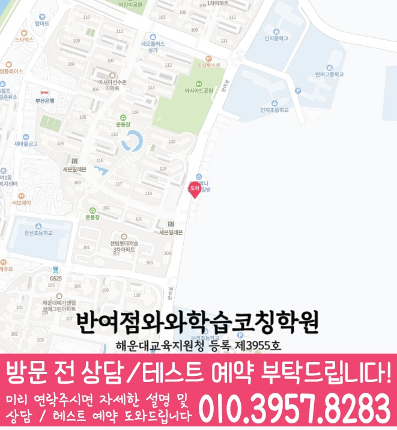

처음부터 많은 문제를 풀기보다, 중3 과정에서 막히는 개념과 풀이 습관을 점검해 학생에게 맞는 학습 순서를 먼저 잡습니다.



LOCAL ACADEMY GUIDE
재송동 중3 수학학원 와와학습코칭센터 수학·영어·국어(영수) 학습 안내
부산 해운대구 재송동에서 중3 학생을 위한 수학학원을 찾고 있다면, 와와학습코칭센터 반여점이 내신과 실력 향상에 필요한 학습 흐름을 체계적으로 안내드립니다. 현재 성취도 진단을 바탕으로 개념을 탄탄히 정리하고, 유형별 문제풀이와 오답 관리를 반복해 시험에서 점수로 이어지도록 코칭합니다. 영어·국어까지 함께 관리하는 영수 균형 학습으로 공부 효율을 높여 학습 부담은 줄이고 결과는 강화합니다.
재송동 중3 수학 수업의 핵심 포인트
해운대구 중학교 내신 경향에 맞춰 단원별 대표 유형부터 심화 응용까지 단계적으로 학습하며, 틀린 원인을 구조적으로 정리합니다.
선생님 특징
공식 암기가 아니라 왜 그런지 이해하도록 지도하고, 학생이 풀이 중 어디에서 멈추는지 끝까지 확인해 다시 연결해 줍니다.
재송동 중3 학생의 숙제·복습·오답 노트를 꾸준히 점검해, 수업이 끝난 뒤에도 성적이 오르는 학습 태도를 함께 만듭니다.
수업 진행방식
1. 현재 수준 확인
중3 학교 진도, 최근 시험 결과, 자주 틀리는 유형을 기준으로 부족한 단원과 약점을 구체적으로 확인합니다.
2. 개념 정리와 수학 유형 학습
단원별 핵심 개념을 먼저 정리하고, 기본 유형→유형 확장→내신·서술형 대비까지 단계적으로 연습합니다.
3. 오답 관리와 학습 피드백
틀린 문제를 단순 재풀이하지 않고, 실수/개념 오류/풀이 전략 부족을 구분해 다음 시험에서 같은 실수가 반복되지 않게 관리합니다.
학년·과목별 학습 전략(영수 코칭)
중3 수학
- 학교 내신 범위에 맞춰 단원별 개념-유형-서술형까지 균형 있게 학습합니다.
- 오답 원인(개념/계산/독해/풀이순서)을 분류해 약점을 빠르게 보완합니다.
중3 영어
- 문법 구조를 기반으로 독해 흐름을 잡고, 내신 문제에서 빈출 포인트를 반복 정리합니다.
- 어휘·문장 독해를 함께 관리해 독해 속도와 정확도를 동시에 올립니다.
중3 국어
- 지문 독해 전략과 문제 풀이 원칙을 유형별로 체계화합니다.
- 서술·선지형 문제의 핵심 근거를 찾아내는 훈련으로 점수 안정성을 높입니다.
영수 통합 관리
- 수학 약점 보완과 함께 영어·국어 학습까지 리듬을 맞춰 성적 편차를 줄입니다.
- 시험 전에는 실수 유형과 자주 틀리는 패턴을 우선 점검해 마무리합니다.
재송동 중3 수학학원으로 부산 해운대구 학생들의 내신과 실력 향상을 돕는 와와학습코칭센터 반여점은, 학생의 현재 상태를 진단해 수학 학습 방향을 정리하고 상담을 통해 영어·국어까지 포함한 영수 전략을 자세히 안내드립니다.
센터 위치 안내
주소
부산 해운대구 반여로 102 경성빌딩 501호
오시는 길
~ 와와학습코칭센터 반여점 위치는 (부산 해운대구 반여로 102 경성빌딩 501호)입니다. 아시아선수촌 정문 건너편 깨비블럭있는 건물 5층
주요 타깃학교(이외 학교도 수업 가능)
초등 타깃학교
인지초
장산초
무정초
중등 타깃학교
장산중
인지중
고등 타깃학교
반여고
과목별 수강 가능 학년
국어
초3
초4
초5
초6
중1
중2
중3
고1
고2
고3
영어
초3
초4
초5
초6
중1
중2
중3
고1
고2
고3
수학
초3
초4
초5
초6
중1
중2
중3
고1
고2
고3
과학
중1
중2
중3
사회
수강 가능 학년 정보 준비중
학원 등록 정보
수업료는 어떻게 되나요? ✨
A - 서울 (1회 90-100분 수업기준)
| 횟수 | 초등 | 중등 | 고등 |
|---|---|---|---|
| 주 3회 | 249,000 | 266,000 | 299,000 |
| 주 4회 | 319,000 | 341,000 | 384,000 |
| 주 5회 | 389,000 | 416,000 | 469,000 |
B - 서울 외 지점 (1회 90-100분 수업기준)
| 횟수 | 초등 | 중등 | 고등 |
|---|---|---|---|
| 주 3회 | 219,000 | 236,000 | 269,000 |
| 주 4회 | 279,000 | 301,000 | 344,000 |
| 주 5회 | 339,000 | 366,000 | 419,000 |
* 수업료는 지역 및 횟수에 따라 일부 차이가 있을 수 있습니다.
중3 수학 상담부터 오답관리까지 이어지는 흐름
중3 수학은 현재 내신 성적만 보는 단계가 아니라, 고등 수학으로 넘어가기 전 개념 연결과 풀이 습관을 정리해야 하는 시기입니다. 상담에서는 학교 진도, 시험 범위, 자주 틀리는 유형, 풀이 기록을 함께 확인해 학생에게 맞는 학습 순서를 잡습니다.
현재 수준 확인
학교 진도, 최근 시험 결과, 어려운 단원, 숙제 수행률과 실수 유형을 확인합니다.
개념과 유형 진단
중3 핵심 단원의 개념 이해, 조건 해석, 식 세우기, 도형 추론 과정을 나누어 봅니다.
플래너 실행 점검
단원별 복습, 유형 반복, 시험 범위 마감 계획을 세우고 실제 수행 여부를 확인합니다.
오답 원인 분석
틀린 문제를 개념 부족, 조건 누락, 계산 실수, 풀이 전략 부족으로 분류해 다음 학습으로 연결합니다.
MIDDLE SCHOOL MATH FAQ
중3 수학학원 FAQ
Q중3 수학은 어떤 단원부터 확인하나요?
학생의 학교 진도와 최근 시험 결과를 바탕으로 중3 과정의 이차함수·삼각비·원의 성질 등 개념 이해도, 유형 적용력, 오답 패턴을 먼저 확인합니다.
Q중3 내신 대비와 고등 수학 준비를 함께 할 수 있나요?
가능합니다. 학교 시험 범위를 우선으로 정리하되, 고등 수학으로 이어지는 문자식 처리, 함수 해석, 도형 추론, 풀이 기록 습관까지 함께 점검합니다.
Q중3 수학 오답 관리는 어떻게 진행되나요?
틀린 문제를 계산 실수, 개념 혼동, 조건 해석, 풀이 전략 부족으로 나누고 유사 유형 반복과 개념 재점검으로 연결합니다.
Q상담 전에 무엇을 준비하면 좋나요?
최근 시험지, 학교 진도, 어려운 단원, 수행평가나 단원평가 결과, 오답노트나 풀이 흔적을 준비하면 더 구체적인 상담이 가능합니다.
REAL PARENT REVIEWS
수강생 학부모 후기
재송동 중3 수학학원 정보를 확인하신 학부모님들이 참고할 수 있는 실제 학습 후기입니다.
학생들이 안전하게 다닐 수 있도록 관리해 주십니다.
아이의 실력에 맞춰 수업을 진행해 주셔서 학습 효과가 높았습니다.
단기간의 점수보다 올바른 공부 방법을 알려주셔서 좋았습니다.
수업과 상담 모두 세심하게 진행되어 만족하고 있습니다.
학부모가 놓치기 쉬운 부분까지 세심하게 안내해 주셨습니다.
학습 결과가 좋지 않을 때 원인을 함께 찾아주셔서 도움이 되었습니다.
재송동 관련 학원 페이지
현재 보고 있는 지역 안에서 센터 안내와 학년·과목별 상세 페이지로 바로 이동할 수 있습니다.
재송동 중3 수학학원 상담이 필요하신가요?
중3 수학의 현재 개념 이해도, 내신 대비 계획, 고등 수학 준비, 오답 패턴을 상담문의로 남겨주시면 학습 방향을 구체적으로 확인할 수 있습니다.
상담문의